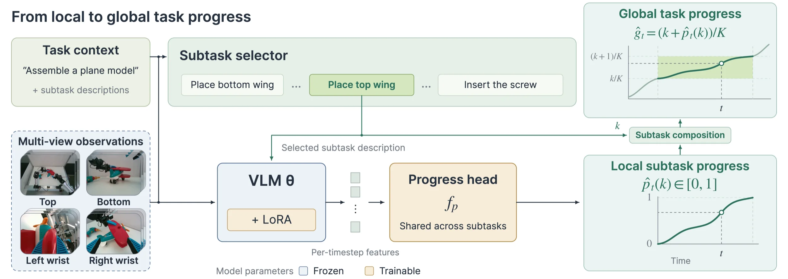

Grana: Compositional Reward Modeling for Long-Horizon Robot Manipulation
Grana estimates whole-task progress by composing subtask progress. It uses subtask and action-quality annotations to construct training targets that account for failures and recovery.
01 · Compositional progress
Estimating whole-task progress from subtasks.
Given a task and its subtask descriptions, Grana selects the unfinished subtask and estimates its local progress. It combines this estimate with credit for completed subtasks to obtain whole-task progress.
Task context
“Assemble an airplane model”
+ subtask descriptions
Subtask selector
Default: Grana’s own VLM
Any subtask selector can be used.
Multi-view observations
VLM θ
+ LoRA
Progress head
fp
Shared across subtasks
Per-timestep features
Local subtask progress
Subtask composition
Global task progress
- Frozen
- Trainable
Grana outputs · one selected held-out episode

Task context (assemble an airplane model, with its nine subtask descriptions) and four camera views go into a frozen vision–language model with trainable LoRA. By default, Grana’s own VLM selects the unfinished subtask and passes its description to the model; any other subtask selector can be used. A trainable progress head, shared across subtasks, predicts that subtask’s local progress from 0 to 1. Composition adds one share of credit for every completed subtask: global progress equals k plus local progress, divided by K. The animation replays the outputs of Grana, adapted to airplane assembly, on one selected held-out episode at six times speed by default, with light smoothing; this episode is not in the paper. Grana moves through all nine subtasks, its local progress restarts at each new subtask, and global progress climbs to 0.99 without losing the credit of completed subtasks.
02 · Reward accuracy
Reward prediction before and after task adaptation.
We compare Grana with SARM, SARM2, RoboMeter, and GPT6 composition. Each experiment specifies the training and adaptation setting.
Show the table
| Method | Airplane (9 subtasks) | Car (10 subtasks) | ||
|---|---|---|---|---|
| 15 traj. | 100 traj. | 15 traj. | 100 traj. | |
| RoboMeter | 0.493 | 0.487 | 0.658 | 0.549 |
| SARM | 0.747 | 0.485 | 1.124 | 0.539 |
| SARM2 | 0.498 | 0.461 | 0.629 | 0.472 |
| Grana, no pretraining | 0.382 | 0.311 | 0.502 | 0.445 |
| Grana | 0.308 | 0.262 | 0.394 | 0.319 |
Show the table
| Reward model | RMSE on 24–30 unseen test trajectories per task ↓ | ||||
|---|---|---|---|---|---|
| Pupgo car assembly (up to 18 subtasks) |
Firetruck assembly (up to 9 subtasks) |
Circuit assembly and switch activation (up to 3 subtasks) |
Airplane assembly (up to 9 subtasks) |
Red car assembly (up to 10 subtasks) |
|
| GPT6: Composition | 1.8135 | 0.2914 | 0.2920 | 0.4505 | 0.5240 |
| SARM (D15) | 0.4042 | 0.5406 | 0.3612 | 0.7474 | 1.1240 |
| SARM2 (D15) | 0.3885 | 0.5166 | 0.2975 | 0.4980 | 0.6290 |
| RoboMeter (D15) | 0.3189 | 0.5202 | 0.1864 | 0.4930 | 0.6580 |
| Ours (D15) | 0.2561 | 0.2264 | 0.1563 | 0.3080 | 0.3940 |
Show the tables · selection accuracy and RMSE
Zero-shot · Qwen3.5-4B
| Model / procedure | Selection acc. ↑ | RMSE ↓ |
|---|---|---|
| Base Qwen3.5-4B: direct prediction | — | 4.541 |
| Base Qwen3.5-4B: composition (our workflow) | 25.37% | 3.068 |
| Ours (pretrained from Qwen3.5-4B; self-selected subtask) | 69.46% | 1.380 |
Zero-shot · GPT6
| Model / procedure | Selection acc. ↑ | RMSE ↓ |
|---|---|---|
| GPT6: direct prediction | — | 1.578 |
| GPT6: composition (our workflow) | 86.56% | 0.524 |
| Ours (pretrained; GPT6-selected subtask) | 86.56% | 0.494 |
GPT6 refers to GPT6-Astra-high throughout this page by 2026/09/15.
Task-related adaptation (15 trajectories)
| Model / procedure | Selection acc. ↑ | RMSE ↓ |
|---|---|---|
| GPT6: composition (zero-shot reference) | 86.56% | 0.524 |
| Ours, no pretraining + adaptation | 93.33% | 0.502 |
| Ours, pretrained + adaptation | 94.70% | 0.394 |
Inference latency and API fees
Grana on one NVIDIA H100 (batch size 1, sequential execution) vs GPT6 composition through its API.
Grana0.47 s GPT6 composition41.55 s
2 calls per query (latency over 8,000 calls)
Grana≈ $0≤10GB VRAM GPT6 composition≈ $38
API fee per trajectory (1 fps, 340 s trajectories)
GPU memory. Around 10 GB GPU VRAM for 4B model inference in BF16 at batch size 1, with 8 timesteps × 4 camera views = 32 images per call. Using fewer camera views, fewer timesteps, or lower numerical precision reduces VRAM usage further.
Sequential timing. The 0.47 s latency sums two model calls executed sequentially at batch size 1: subtask selection and local-progress prediction. Processing independent queries in parallel can improve throughput.
Image workload. A typical complete scoring query uses two model calls, each with 8 sampled timesteps × 4 camera views: 2 × 8 × 4 = 64 image inputs in total (32 per call). This input workload may contribute to GPT6’s longer API latency.
Show the table
| Scoring procedure | Latency per query | API cost US$ / trajectory |
|---|---|---|
| Ours NVIDIA H100 · batch size 1 | 2 × 234.7 ms =469.4 ms | No API fee |
| GPT6 composition Total | 29.00 + 12.55 =41.55 s | ≈ $38.08/traj |
| Subtask selection | 29.00 s | ≈ $20.31/traj |
| Within-stage progress | 12.55 s | ≈ $17.77/traj |
API costs use 1 fps on trajectories averaging 340 s; local GPU costs are not priced.
Reported latencies were measured over 8,000 calls. For both Ours and GPT6 composition, the per-query latency sums subtask selection and within-stage progress. Grana was measured on one NVIDIA H100 at batch size 1, executing these two calls sequentially. API costs use 1 fps on trajectories averaging 340 s in the reported experiment; local GPU costs are not priced.
How predictions respond to setbacks
Watch the contact-rich interactions, failures, and retries alongside each model's progress curve.
Progress is shown in accumulated subtask units; pink marks annotated failure, and boundary triangles mark predictions outside the plotted range.
03 · Post-training with Grana
Policy learning with Grana progress estimates.
Changes in predicted progress are converted into rewards for offline RL or threshold-based imitation weights for behavior cloning. The results below report policy success rates on four tasks.
Compare reward sources and training iterations · Figs. 5–6
04 · Planning with Grana
Model predictive control with Grana.
Grana scores candidate rollouts predicted by a world model to guide action selection. The examples below compare the policy alone with Grana-guided model predictive control (MPC).
05 · Pretraining task examples
200 pretraining tasks; 50 held-out evaluation tasks.
Examples from the mostly short manipulation tasks used for pretraining, with subtask descriptions and action-quality annotations. The long assembly tasks and the two offline-RL tasks are excluded from pretraining.
06 · BibTeX
Citation.
@misc{grana2026,
title = {{Grana}: Compositional Reward Modeling for Long-Horizon Robot Manipulation},
author = {Cao, Zi-ang and Zheng, Kaiyuan and Xu, Yinzhen and
Duan, Haonan and Gu, Jiasheng and Hu, Fengyuan and
Zhu, Nan and Lei, Kun and Lin, Kevin and Zheng, Ruijie and
Gao, Shenyuan and Zhu, Fangqi and Zhang, Zhe and
Poovendran, Radha and Fan, Linxi and Wang, Guanzhi and Zhu, Yuke},
year = {2026},
url = {https://robot-reward-prism.github.io/}
}